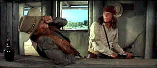

| Hombre/ B, B+ |
| Fox/1967/111/ANA 2.35 |
Hombre caught by surprise. It wasn't a
quick-draw western, but the taut forceful performance by Paul Newman in
the title role was enough to keep riveted to the screen. Newman's central
performance as John Russell, the man walking the line between an Indian
and white man's world is a fascinating character. Russell has his own code
of ethics and the films pivots on his every move. It doesn't hurt that the
source material comes from an Elmore Leonard novel.
When Russell finds himself part of a group of
stagecoach travelers, he must examine himself through their eyes as well
as his own. The ingredients are reminiscent of John Ford's Stagecoach,
but Newman and John Wayne (Stagecoach's gun) are worlds apart in
style and substance. The group find's themselves up against some pretty
nasty desperadoes. Under pressure, the best of them and the worst of them is sure to
come out.
 |
|
A man of action. ©Fox
|
Frederic March is such a mean-spirited man as Indian
Agent Favor. Having enormous respect for March as an actor and the
characters he's played over the years, I felt a slight letdown at this
despicable character, but March is very good. Diane Cilento is excellent
opposite Newman as the marginal sex interest. She's tough and earthy.
Martin Balsam as a Mexican is a bit of a stretch, but he's a good actor.
Richard Boone is a stark contrast in styles to Newman. Boone has no
compunction about overacting as bad boy Grimes. His laugh is enough for
both him, Newman and a couple of other actors. But Boone is entertaining
in the part.
Direction by Martin Ritt is
solid. Ritt is not especially a visual stylist, but he tells a story.
Still, the western vistas photograph are often stirring in their beauty.
Having James Wong Howe as your cinematographer doesn't hurt. Ritt does get an excellent performance from Newman. He knows how long to let
the camera linger on the actor, he understands the importance of pauses.
He's a patient filmmaker in this essentially action film.
Hombre is a solid DVD transfer. Color saturation is outstanding
with fine range. Check out the burnished brown skin on the close-ups of
Newman, not to mention the penetrating blue eyes. You can count the years
and the pain reflected in their icy stare and look through to the keen
intelligence. Images are consistently sharp though there is some edge
enhancement. Perhaps there's a touch of excess grain, but it is tightly
controlled. Solid blacks and excellent contrast. Two-channel mono sound is
clean delivering the David Rose score with brio. |
|
|
|

The Feature Archive has articles ranging from Akira Kurosawa to Blonde Bimbos.

Click on the image above for a "dream interview"
with director John Ford.

The Movie Poster
Archive includes extensive poster images from the films of stars like
Susan Hayward, Kirk Douglas, Katharine Hepburn and many more. Our
featured star is Humphrey Bogart.

 Have you visited Home Theater
Talk lately? One of the friendliest places on the Net for
Home Theater and DVD discussion, you can get help for installation
problems or simply share your opinions with other Vidiots. Have you visited Home Theater
Talk lately? One of the friendliest places on the Net for
Home Theater and DVD discussion, you can get help for installation
problems or simply share your opinions with other Vidiots.

"CinemaQuest has matched the correct TV color of gray in a light
fixture."__Joe Kane
Monitor bias lighting in a pre-packaged configuration. Take the strain
off your eyes.
 Jim Doolittle Jim Doolittle
ISF Instructor. Premier calibrator and expert front projection system
setup technician in the Boston area.

DVD News, Reviews, Previews, Easter Eggs and more.
|